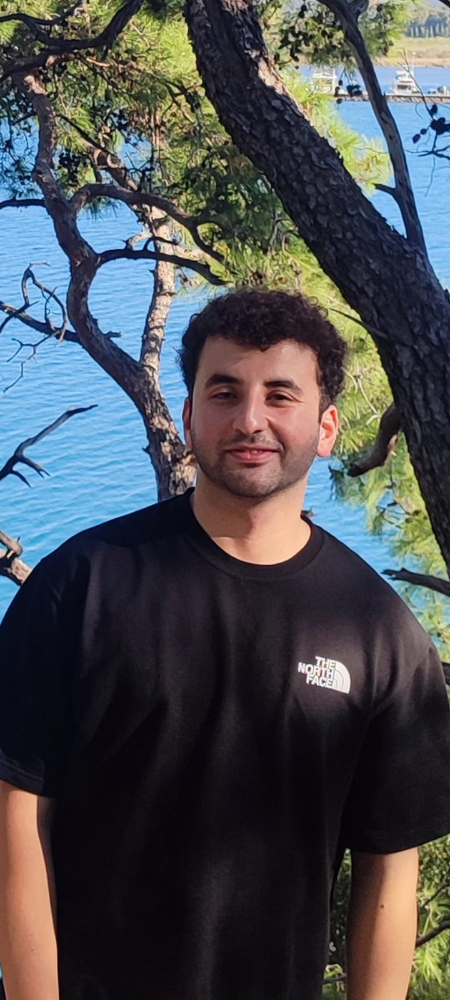

Ferhat DEMİRHAN
Hakkımda
Merhaba, ben Psikolojik Danışman. Uzmanlık alanlarım bireysel terapi, aile danışmanlığı ve ergen psikolojisidir. Eğitimimi Muğla Sıtkı Koçman Üniversitesi Psikolojik Danışmanlık ve Rehberlik bölümünde tamamladım. 9 aylık insan kaynakları deneyimim ve 2 ay engelsiz yaşam merkezi tecrübemle size destek sunuyorum.
Hizmetler
- Bireysel Terapi
- Çift ve Aile Danışmanlığı
- Çocuk ve Ergen Danışmanlığı
- Online Terapi
İletişim
Telefon: +90 541 434 68 09
Email: ferhatd.demirhann@gmail.com
İnstagram: psk.dan.ferhademirhan
Linkedin: Ferhat Demirhan
Günlük Yazılar
Bugünkü düşüncem: Danışanlarla kurduğum bağ, her seansı daha anlamlı kılıyor. Her bireyin hikayesi farklı ve her hikaye, kendine özgü bir derinlik barındırıyor. Psikolojik destek, bu hikayeleri anlamlandırmak için güçlü bir köprü olabilir.